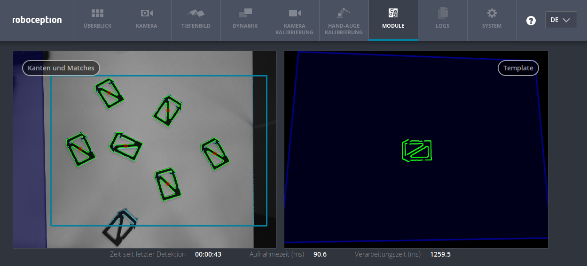

SilhouetteMatch¶
Einführung¶
Das SilhouetteMatch-Modul ist ein optional erhältliches Modul, welches intern auf dem rc_visard läuft. Das SilhouetteMatch-Modul erkennt Objekte indem eine vordefinierte Silhouette („Template“) mit Kanten im Bild verglichen wird.
Bemerkung
Das SilhouetteMatch-Modul ist optional und benötigt eine eigene Lizenz, welche erworben werden muss.
Für jedes Objekt, das mit dem SilhouetteMatch-Modul erkannt werden soll, wird ein Template benötigt. Roboception bietet bietet hierfür einen Template-Generierungsservice auf ihrer Website an, auf der der Benutzer CAD-Daten oder mit dem rc_visard aufgenommene Daten hochladen kann, um Templates generieren zu lassen.
Templates bestehen aus den prägnanten Kanten eines Objekts. Die Kanten des Templates werden mit den erkannten Kanten im linken und rechten Kamerabild abgeglichen, wobei die Größe der Objekte und deren Abstand zum rc_visard mit einbezogen wird. Die Posen der erkannten Objekte werden zurückgegeben und können beispielsweise benutzt werden, um die Objekte zu greifen.
Taugliche Objekte¶
Das SilhouetteMatch-Modul ist für Objekte ausgelegt, welche prägnante Kanten auf einer Ebene besitzen, welche parallel zu der Basisebene ist, auf welcher die Objekte liegen. Das trifft beispielsweise auf flache, nicht-transparente Objekte zu, wie gefräste, lasergeschnittene oder wasserstrahlgeschnittene Teile. Komplexere Objekte können auch erkannt werden, solange sie prägnante Kanten auf einer Ebene besitzen, z.B. ein gedrucktes Muster auf einer ebenen Fläche.
Das SilhouetteMatch-Modul funktioniert am besten für Objekte, welche auf einer texturlosen Basisebene liegen. Die Farbe der Basisebene sollte so gewählt werden, dass im Intensitätsbild ein klarer Kontrast zwischen den Objekten und der Basisebene sichtbar ist.
Taugliche Szene¶
Eine für das SilhouetteMatch-Modul taugliche Szene muss folgende Bedingungen erfüllen:
- Die zu erkennenden Objekte müssen, wie oben beschrieben, tauglich für das SilhouetteMatch-Modul sein.
- Nur Objekte, welche zum selben Template gehören, dürfen gleichzeitig sichtbar sein (sortenrein). Falls auch andere Objekte sichtbar sind, muss eine passende Region of Interest (ROI) festgelegt werden.
- Alle sichtbaren Objekte befinden sich auf einer gemeinsamen Basisebene, welche kalibriert werden muss.
- Die Verkippung der Basisebene zur Blickrichtung des rc_visard darf 10 Grad nicht übersteigen.
- Die Objekte sind weder teilweise noch komplett verdeckt.
- Alle sichtbaren Objekte liegen richtig herum.
- Die Objektkanten, welche abgeglichen werden sollen, sind sowohl im linken als auch im rechten Kamerabild zu sehen.
Kalibrierung der Basisebene¶
Bevor Objekte erkannt werden können, muss die Basisebene kalibriert werden. Hierbei wird die Distanz und der Winkel der Ebene, auf welcher die Objekte liegen, gemessen und persistent auf dem rc_visard gespeichert.
Durch die Trennung der Kalibrierung der Basisebene von der eigentlichen Objekterkennung werden beispielsweise Szenarien ermöglicht, in denen die Basisebene zeitweise verdeckt ist. Darüber hinaus wird die Berechnungszeit der Objekterkennung für Szenarien verringert, in welchen die Basisebene für eine gewisse Zeit fixiert ist – die Basisebene muss in diesem Fall nicht fortlaufend neu detektiert werden.
The Kalibrierung der Basisebene kann mit drei unterschiedlichen Verfahren durchgeführt werden, auf welche im Folgenden näher eingegangen wird:
- AprilTag-basiert
- Stereo-basiert
- Manuell
Die Kalibrierung ist erfolgreich, solange der Normalenvektor der Basisebene höchstens 10 Grad gegen die Blickrichtung des rc_visard verkippt ist. Eine erfolgreiche Kalibrierung wird persistent auf dem rc_visard gespeichert, bis sie entweder gelöscht wird oder eine neue Kalibrierung durchgeführt wird.
In Szenarien, in denen die Basisebene nicht direkt kalibriert werden kann, ist es auch möglich, zu einer zur Basisebene parallel liegenden Ebene zu kalibrieren. In diesem Fall kann der offset Parameter benutzt werden, um die geschätzte Ebene auf die eigentliche Basisebene zu verschieben. Der offset Parameter gibt die Distanz in Metern an, um welche die geschätzte Ebene in Richtung des rc_visard verschoben wird.
In der REST-API ist eine Ebene durch eine Normale (nomal) und einen Abstand (distance) definiert. normal ist ein normalisierter 3-Vektor, welcher die Normale der Ebene spezifiziert. Die Normale zeigt immer von der Kamera weg. distance repräsentiert den Abstand der Ebene von der Kamera in Richtung der Normale. normal und distance können auch als \(a\), \(b\), \(c\), bzw. \(d\) der Ebenengleichung interpretiert werden:
Bemerkung
Um Datenschutzproblemen entgegenzuwirken, wird die Visualisierung der Kalibrierung der Basisebene nach einem Neustart des rc_visard verschwommen dargestellt.
AprilTag-basierte Kalibrierung der Basisebene¶
Die AprilTag-Erkennung (siehe TagDetect) wird benutzt, um AprilTags in der Szene zu finden und eine Ebene durch diese zu legen. Mindestens drei AprilTags müssen so auf der Basisebene platziert werden, dass sie im linken und rechten Kamerabild zu sehen sind. Die AprilTags sollten ein möglichst großes Dreieck aufspannen. Je größer das Dreieck ist, desto höher wird die Genauigkeit der Schätzung der Basisebene. Diese Methode sollte benutzt werden, wenn die Basisebene untexturiert und kein externer Projektor mit Zufallsmuster angeschlossen ist. Diese Kalibriermethode ist sowohl über die REST-API als auch über die Web GUI verfügbar.
Stereo-basierte Kalibrierung der Basisebene¶
In der 3D-Punktwolke, welche intern auf dem rc_visard über SGM berechnet wird, wird diejenige Ebene gesucht, welche am weitesten vom rc_visard entfernt ist. Die Region of Interest (ROI) sollte für diese Methode deshalb so gewählt werden, dass nur die relevante Basisebene eingeschlossen wird. Die Basisebene darf nicht vollständig von Objekten verdeckt werden. Diese Methode sollte benutzt werden, wenn die Basisebene texturiert ist oder ein Projektor mit Zufallsmuster angeschlossen ist. Diese Kalibriermethode ist sowohl über die REST-API also auch über die Web GUI verfügbar.
Manuelle Kalibrierung der Basisebene¶
Die Basisebene kann manuell gesetzt werden, falls die Parameter bekannt sind – beispielsweise von einer vorangegangenen Kalibrierung. Diese Kalibriermethode ist nur über die REST-API und nicht über die Web GUI verfügbar.
Setzen einer Region of Interest¶
Falls Objekte nur in einem Teil des Sichtfelds des rc_visard erkannt werden sollen, kann eine Region of Interest (ROI) gesetzt werden. Eine ROI ist als rechteckiger Teil des linken Kamerabilds definiert und kann sowohl über die REST-API als auch über die Web GUI gesetzt werden. Die Web GUI bietet hierfür ein einfach zu benutzendes Werkzeug an. Es können bis zu 10 ROIs angelegt und persistent auf dem rc_visard gespeichert werden. Jeder ROI muss ein eindeutiger Name zugewiesen werden, um diese später während der Kalibrierung der Basisebene oder der Objekterkennung referenzieren zu können.
In der REST-API ist eine 2D ROI über folgende Werte spezifiziert:
id: Eindeutiger Name der ROIoffset_x,offset_y: Abstand in Pixeln von der oberen rechten Bildecke entlang der X- bzw. Y-Achsewidth,height: Höhe und Breite in Pixeln
Objekterkennung¶
Objekte können erst nach einer erfolgreichen Kalibrierung der Basisebene erkannt werden. Es muss sichergestellt werden, dass sich Position und Orientierung der Basisebene zwischen Kalibierung und Objekterkennung nicht ändert. Anderenfalls muss die Kalibrierung erneuert werden.
Um eine Objekterkennung durchzuführen, müssen im Allgemeinen die folgenden Serviceargumente an das SilhouetteMatch-Modul übergeben werden:
- Das Template des Objekts, welches in der Szene erkannt werden soll.
- Das Koordinatensystem, in welchem die Posen der detektierten Objekte zurückgegeben werden sollen (siehe Hand-Auge-Kalibrierung).
Optional können auch folgende Serviceargumente an das SilhouetteMatch-Modul übergeben werden:
- Für den Fall, dass Objekte nicht direkt auf der Basisebene liegen, sondern auf einer zu dieser parallelen Ebene, kann ein Versatz angegeben werden. Der Versatz bezeichnet die Distanz beider Ebenen in Richtung der Kamera. Wenn dieser Wert nicht gesetzt wird, wird ein Versatz von 0 angenommen.
- Eine Region of Interest, in welcher die Objekte erkannt werden sollen. Wenn keine ROI gesetzt wird, werden Objekte im gesamten Kamerabild gesucht.
- Die aktuelle Roboterpose, wenn als Koordinatensystem
externalgewählt wurde und der rc_visard am Roboter montiert ist (nur über die REST-API möglich).
Im „Ausprobieren“-Abschnitt der SilhouetteMatch-Modul Registerkarte der Web GUI kann die Objektdetektion ausprobiert werden. Das Ergebnis wird, wie in Abbildung Abb. 53 dargestellt, visualisiert.
Abb. 53 Ergebnisbild des SilhouetteMatch-Moduls, wie über die Web GUI dargestellt
{kind=link}
Das rechte Bild zeigt die kalibrierte Basisebene in blau und das zu erkennende Template in grün. Das Template wird passend zu Abstand und Verkippung der Basisebene verformt dargestellt.
Das linke Bild zeigt das Detektionsergebnis. Die blauschattierte Fläche auf der linken Seite markiert den Teil des linken Kamerabilds, welcher nicht mit dem rechten Kamerabild überlappt. In diesem Teil können keine Objekte erkannt werden. Die gewählte Region of Interest wird als petrolfarbenes Rechteck dargestellt. Erkannte Kanten im Bild werden in hellem Blau und erkannte Objekte in grün visualisiert. Rote Kreise markieren jeweils den Ursprung der detektierten Objekte, wie im Template festgelegt. Die Posen der Objektursprünge werden im gewählen Koordinatensystem zurückgegeben. Falls Objekte rotationssymmetrisch sind, besitzen alle Ergebnisposen die gleiche Orientierung. Für nicht-rotationssymmetrische Objekte richtet sich die Orientierung nach der Normale der Basisebene.
Die Detektionsergebnisse und Berechnungszeiten werden durch Laufzeitparameter beeinflusst, welche weiter unten aufgezählt und beschrieben werden. Unsachgemäße Parameterwerte können zu Zeitüberschreitungen im Detektionsprozess des SilhouetteMatch-Moduls führen.
Wechselwirkung mit anderen Modulen¶
Die folgenden, intern auf dem rc_visard laufenden Module liefern Daten für das SilhouetteMatch-Modul oder haben Einfluss auf die Datenverarbeitung.
Bemerkung
Jedwede Konfigurationsänderung dieser Module kann direkte Auswirkungen auf die Qualität oder das Leistungsverhalten des SilhouetteMatch-Moduls haben.
Stereokamera und Stereo-Matching¶
Das SilhouetteMatch-Modul verarbeitet intern die rektifizierten Bilder des Stereokamera Moduls (rc_stereocamera). Es sollte deshalb auf eine passende Belichtungszeit geachtet werden, um optimale Ergebnisse zu erhalten.
Für die Kalibrierung der Basisebene mit der Stereo-Methode wird das Disparitätsbild des Stereo-Matching Moduls (rc_stereomatching) verarbeitet. Abgesehen davon sollte das Stereo-Matching-Modul nicht parallel zum SilhouetteMatch-Modul ausgeführt werden, da die Laufzeit der Objekterkennung sonst negativ beeinflusst wird.
Für beste Ergebnisse wird empfohlen, Glättung für Stereo-Matching zu aktivieren.
IO und Projektor-Kontrolle¶
Wenn der rc_visard in Verbindung mit einem externen Projektor mit Zufallsmuster und dem IO und Projektor-Kontrolle Modul (rc_iocontrol) betrieben wird, sollte der Projektor für die Stereo-basierte Kalibrierung der Basisebene benutzt werden.
Das projizierte Muster darf während der Objektdetektion nicht im linken oder rechten Kamerabild sichtbar sein, da es den Detektionsvorgang behindert. Der Projektor sollte deshalb entweder ausgeschaltet sein oder im Modus ExposureAlternateActive betrieben werden.
Hand-Auge-Kalibrierung¶
Wenn der rc_visard zu einem Roboter kalibriert ist, kann das SilhouetteMatch-Modul die Ergebnisposen automatisch im Roboterkoordinatensystem liefern. Für die Services des SilhouetteMatch-Moduls kann das Referenzkoordinatensystem aller Posen über das pose_frame Argument angegeben werden.
Es kann zwischen den folgenden zwei Werten für pose_frame gewählt werden:
- Kamera-Koordinatensystem (
camera). Alle Posen und Ebenenparameter werden im Kamera-Koordinatensystem angegeben. - Benutzerdefiniertes externes Koordinatensystem (
external). Alle Posen und Ebenenparameter sind im sogenannten externen Koordinatensystem angegeben, welches vom Nutzer während der Hand-Auge-Kalibrierung gewählt wurde. In diesem Fall bezieht das SilhouetteMatch-Modul alle notwendigen Informationen über die Sensormontage und die kalibrierte Hand-Auge-Transformation automatisch vom internen Hand-eye calibration component Modul.
Zulässige Werte zur Angabe des Referenzkoordinatensystems sind camera und external. Andere Werte werden als ungültig zurückgewiesen.
Bemerkung
Ist der rc_visard aktuell nicht mittels der Hand-Auge-Kalibrierung kalibriert, muss als Referenzkoordinatensystem pose_frame immer camera angegeben werden.
Bemerkung
Wird die Hand-Auge-Kalibrierung nach einer Kalibrierung der Basisebene verändert, wird die Kalibrierung der Basisebene als ungültig markiert und muss erneuert werden.
Abhängig von pose_frame kann es nötig sein, zusätzlich die aktuelle Roboterpose (robot_pose) dem SilhouetteMatch-Modul zur Verfügung zu stellen:
- Wenn
externalalspose_frameausgewählt ist, ist die Angabe der Roboterpose obligatorisch. - Wenn
cameraalspose_frameausgewählt ist, ist die Angabe der Roboterpose optional.
Wenn die aktuelle Roboterpose während der Kalibrierung der Basisebene angegeben wird, wird sie persistent auf dem rc_visard gespeichert. Falls für die Services get_base_plane_calibration oder detect_objects die dann aktuelle Roboterpose ebenfalls angegeben wird, wird die Basisebene automatisch zu der neuen Roboterpose transformiert. Das erlaubt dem Benutzer, die Roboterpose (und damit die Pose des rc_visard) zwischen Kalibrierung der Basisebene und Objekterkennung zu verändern.
Bemerkung
Eine Objekterkennung kann nur durchgeführt werden, wenn die Verkippung der Basisebene zum rc_visard das 10-Grad-Limit nicht übersteigt.
Parameter und Statuswerte¶
Die verschiedenen Laufzeitparameter und Konfigurationsoptionen des SilhouetteMatch-Moduls können sowohl über die Web GUI als auch über die Swagger UI ausprobiert werden. Der entsprechende Name des SilhouetteMatch-Moduls in der REST-API ist rc_silhouettematch.
Übersicht über die Parameter¶
Dieses Softwaremodul bietet folgende Laufzeitparameter.
| Name | Typ | Min. | Max. | Default | Beschreibung |
|---|---|---|---|---|---|
edge_sensitivity |
float64 | 0.1 | 1.0 | 0.6 | Empfindlichkeit der Kantenerkennung |
match_max_distance |
float64 | 0.0 | 10.0 | 2.5 | Der maximale tolerierte Abstand zwischen dem Template und den detektierten Kanten im Bild in Pixeln |
match_percentile |
float64 | 0.7 | 1.0 | 0.85 | Der Anteil der Template-Pixel, die innerhalb der maximalen Matchingdistanz liegen müssen, um ein Objekt erfolgreich zu detektieren |
max_number_of_detected_objects |
int32 | 1 | 20 | 10 | Maximale Anzahl der zu detektierenden Objekte |
quality |
string | - | - | High | H(igh), M(edium), oder L(ow) |
Diese Modul meldet folgende Statuswerte.
| Name | Beschreibung |
|---|---|
data_acquisition_time |
Zeit in Sekunden, für die beim letzten Aufruf auf Bilddaten gewartet werden musste |
detect_service_time |
Berechnungszeit für die Objekterkennung, einschließlich der Datenaufnahmezeit |
calibrate_service_time |
Berechnungszeit für die Kalibrierung der Basisebene, einschließlich der Datenaufnahmezeit |
last_timestamp_processed |
Zeitstempel des letzten verarbeiteten Bilddatensatzes |
Beschreibung der Laufzeitparameter¶
Die Laufzeitparameter werden zeilenweise auf Registerkarte des SilhouetteMatch-Moduls in der Web GUI dargestellt. Im folgenden wird der Name des Parameters in der Web GUI wird in Klammern hinter dem eigentlichen Parameternamen angegeben. Die Parameter sind in der selben Reihenfolge wie in der Web GUI aufgezählt:
quality(Qualität)- Die Objekterkennung kann auf Bildern mit unterschiedlicher Auflösung durchgeführt werden: Hoch (1280 x 960), mittel (640 x 480) oder niedrig (320 x 240). Je niedriger die Auflösung ist, desto niedriger ist die Berechnungszeit der Objekterkennung, aber desto weniger Objektdetails sind erkennbar.
max_number_of_detected_objects(Maximale Objektanzahl)- Dieser Parameter an, wie viele Objekte maximal in der Szene erkannt werden sollen. Falls mehr als die angegebene Zahl an Objekten gefunden wurden, werden nur die besten Ergebnisse zurückgeliefert.
match_max_distance(Maximale Matchingdistanz)- Dieser Parameter gibt den maximal tolerierten Abstand zwischen dem Template und den detektierten Kanten im Bild in Pixeln an. Falls das Objekt durch das Template nicht exakt genug beschrieben wird, wird es möglicherweise nicht erkannt, wenn dieser Wert zu klein ist. Höhere Werte können jedoch im Fall von komplexen Szenen und bei ähnlichen Objekten zu Fehldetektionen führen, und auch die Berechnungszeit wird erhöht.
match_percentile(Matching Perzentil)- Dieser Parameter kontrolliert, wir strikt der Detektionsprozess sein soll. Das Matching Perzentil gibt den Anteil der Template-Pixel an, die innerhalb der maximalen Matchingdistanz liegen müssen, um ein Objekt erfolgreich zu detektieren. Je höher der Wert, desto exakter muss ein Match sein, um als gültig angesehen zu werden.
edge_sensitivity(Kantenempfindlichkeit)- Der Parameter beeinflusst, wie viele Kanten in den Kamerabildern gefunden werden. Umso größer dieser Parameter gewählt wird, umso mehr Kanten werden für die Erkennung benutzt. Eine große Anzahl von Kanten im Bild kann die Erkennung verlangsamen.
Services¶
Die zur Verfügung stehenden Services des rc_silhouettematch-Moduls können mit Hilfe der Swagger UI oder der rc_visard Web GUI ausprobiert und getestet werden.
Zusätzlich zur eigentlichen Serviceantwort gibt jeder Service einen sogenannten return_code bestehend aus einem Integer-Wert und einer optionalen Textnachricht zurück.
Erfolgreiche Service-Anfragen werden mit einem Wert von 0 quittiert. Positive Werte bedeuten, dass die Service-Anfrage zwar erfolgreich bearbeitet wurde, aber zusätzliche Informationen zur Verfügung stehen. Negative Werte bedeuten, dass Fehler aufgetreten sind.
| Code | Beschreibung |
|---|---|
| 0 | Erfolgreich |
| -1 | Ungültige(s) Argument(e) |
| -3 | Ein interner Timeout ist aufgetreten, beispielsweise während der Objekterkennung |
| -4 | Die maximal erlaubte Zeitspanne von 3.0 Sekunden für die interne Akquise der Bilddaten wurde überschritten |
| -7 | Daten konnten nicht in den persistenten Speicher geschrieben oder vom persistenten Speicher gelesen werden |
| -100 | Ein interner Fehler ist aufgetreten |
| -101 | Die Erkennung der Basisebene schlug fehl |
| -102 | Die Hand-Auge-Kalibrierung hat sich seit der letzten Kalibrierung der Basisebene verändert |
| -103 | Die maximale Anzahl an ROIs wurde erreicht |
| -104 | Die Verkippung zwischen der Basisebene und dem rc_visard überschreitet das 10-Grad-Limit |
| 101 | Eine bestehende ROI wurde überschrieben |
| 102 | Die angegebene Roboterpose wurde nicht berücksichtigt |
| 103 | Die Basisebene wurde nicht zur aktuellen Roboterpose transformiert, z.B. weil keine Roboterpose während der Kalibrierung der Basisebene angegeben wurde |
Das SilhouetteMatch-Modul bietet folgende Services.
calibrate_base_planeMit dieser Serviceanfrage wird die Kalibrierung der Basisebene durchgeführt, siehe Kalibrierung der Basisebene. Eine erfolgreiche Kalibrierung der Basisebene wird persistent auf dem rc_visard gespeichert und vom Service zurückgegeben. Die Kalibrierung ist dauerhaft – auch über Firmware-Updates und -Wiederherstellungen hinweg – gespeichert.
Dabei garantiert das Zeitverhalten dieses Services, dass nur Bilddaten zur Erkennung benutzt werden, welche nach dem Anfragezeitpunkt generiert wurden.
Für diesen Service sind folgende Argumente nötig:
{ "offset": "float64", "plane": { "distance": "float64", "normal": { "x": "float64", "y": "float64", "z": "float64" } }, "plane_estimation_method": "string", "pose_frame": "string", "region_of_interest_2d_id": "string", "robot_pose": { "orientation": { "w": "float64", "x": "float64", "y": "float64", "z": "float64" }, "position": { "x": "float64", "y": "float64", "z": "float64" } } }
Dieser Service liefert folgende Rückgabewerte:
{ "plane": { "distance": "float64", "normal": { "x": "float64", "y": "float64", "z": "float64" }, "pose_frame": "string" }, "return_code": { "message": "string", "value": "int16" }, "timestamp": { "nsec": "int32", "sec": "int32" } }
Obligatorische Serviceargumente:
plane_estimation_method: Methode der Kalibrierung der Basisebene. Gültige Werte sindSTEREO,APRILTAG,MANUAL.pose_frame: siehe Hand-Auge-Kalibrierung.Potentiell obligatorische Serviceargumente:
planewenn fürplane_estimation_methodMANUALgewählt ist: Die Ebene, welche als Basisebene gesetzt wird.robot_pose: siehe Hand-Auge-Kalibrierung.Optionale Serviceargumente:
offset: Versatz in Metern, um welche die geschätzte Ebene in Richtung der Kamera verschoben wird.
get_base_plane_calibrationGibt die derzeitige Kalibrierung der Basisebene zurück.
Für diesen Service sind folgende Argumente nötig:
{ "pose_frame": "string", "robot_pose": { "orientation": { "w": "float64", "x": "float64", "y": "float64", "z": "float64" }, "position": { "x": "float64", "y": "float64", "z": "float64" } } }
Dieser Service liefert folgende Rückgabewerte:
{ "plane": { "distance": "float64", "normal": { "x": "float64", "y": "float64", "z": "float64" }, "pose_frame": "string" }, "return_code": { "message": "string", "value": "int16" } }
Obligatorische Serviceargumente:
pose_frame: siehe Hand-Auge-Kalibrierung.Potentiell obligatorische Serviceargumente:
robot_pose: siehe Hand-Auge-Kalibrierung.
delete_base_plane_calibrationLöscht die derzeitige Kalibrierung der Basisebene.
Für diesen Service sind keine Argumente nötig.
Dieser Service liefert folgende Rückgabewerte:
{ "return_code": { "message": "string", "value": "int16" } }
set_region_of_interest_2dKonfiguriert und speichert eine 2D Region of Interest (ROI) auf dem rc_visard. Alle ROIs sind dauerhaft – auch über Firmware-Updates und -Wiederherstellungen hinweg – gespeichert.
Vergleiche hierzu die exakte Definition und Beschreibung der Setzen einer Region of Interest.
Für diesen Service sind folgende Argumente nötig:
{ "region_of_interest_2d": { "height": "uint32", "id": "string", "offset_x": "uint32", "offset_y": "uint32", "width": "uint32" } }
Dieser Service liefert folgende Rückgabewerte:
{ "return_code": { "message": "string", "value": "int16" } }
get_regions_of_interest_2dReturns the configured 2D regions of interest with the requested
region_of_interest_2d_ids. If noregion_of_interest_2d_idsare provided, all configured 2D regions of interest are returned.Für diesen Service sind folgende Argumente nötig:
{ "region_of_interest_2d_ids": [ "string" ] }
Dieser Service liefert folgende Rückgabewerte:
{ "regions_of_interest": [ { "height": "uint32", "id": "string", "offset_x": "uint32", "offset_y": "uint32", "width": "uint32" } ], "return_code": { "message": "string", "value": "int16" } }
delete_regions_of_interest_2dLöscht die mit
region_of_interest_2d_idsspezifizierten, gespeicherten ROIs. Alle zu löschenden ROIs müssen explizit angegeben werden.Für diesen Service sind folgende Argumente nötig:
{ "region_of_interest_2d_ids": [ "string" ] }
Dieser Service liefert folgende Rückgabewerte:
{ "return_code": { "message": "string", "value": "int16" } }
detect_objectMit dieser Serviceanfrage wird eine Objekterkennung durchgeführt. Der Service gibt die Posen aller gefundenen Objektinstanzen zurück. Die maximale Anzahl der zurückgegebenen Instanzen kann über den
max_number_of_detected_objects-Parameter kontrolliert werden.Dabei garantiert das Zeitverhalten dieses Services, dass nur Bilddaten zur Erkennung benutzt werden, welche nach dem Anfragezeitpunkt generiert wurden.
Siehe Objekterkennung für mehr Informationen über die Objekterkennung.
Für diesen Service sind folgende Argumente nötig:
{ "object_to_detect": { "object_id": "string", "region_of_interest_2d_id": "string" }, "offset": "float64", "pose_frame": "string", "robot_pose": { "orientation": { "w": "float64", "x": "float64", "y": "float64", "z": "float64" }, "position": { "x": "float64", "y": "float64", "z": "float64" } } }
Dieser Service liefert folgende Rückgabewerte:
{ "instances": [ { "id": "string", "object_id": "string", "pose": { "orientation": { "w": "float64", "x": "float64", "y": "float64", "z": "float64" }, "position": { "x": "float64", "y": "float64", "z": "float64" } }, "pose_frame": "string", "timestamp": { "nsec": "int32", "sec": "int32" } } ], "object_id": "string", "return_code": { "message": "string", "value": "int16" }, "timestamp": { "nsec": "int32", "sec": "int32" } }
Obligatorische Serviceargumente:
object_idinobject_to_detect: ID des Templates, welches erkannt werden soll.pose_frame: siehe Hand-Auge-Kalibrierung.Potentiell obligatorische Serviceargumente:
robot_pose: siehe Hand-Auge-Kalibrierung.Optionale Serviceargumente:
offset: Versatz in Metern, um welche die Basisebene in Richtung der Kamera verschoben werden soll.
save_parameters(Speichern)- Beim Aufruf dieses Services werden die aktuellen Parametereinstellungen des SilhouetteMatch-Moduls auf dem rc_visard gespeichert. Das bedeutet, dass diese Werte selbst nach einem Neustart angewandt werden. Bei Firmware-Updates oder -Wiederherstellungen werden sie jedoch wieder auf den Standardwert gesetzt.
reset_to_defaults(Zurücksetzen)- Hiermit werden die Werkseinstellungen der Parameter dieses Moduls wiederhergestellt und angewandt („factory reset“). Dies betrifft nicht die konfigurierten ROIs und die Kalibrierung der Basisebene.
Template Upload¶
Für den Upload, Download und das Auflisten von Templates werden spezielle REST-API Endpunkte zur Verfügung gestellt. Bis zu 50 Templates können gleichzeitig auf dem rc_visard gespeichert werden.
-
GET/nodes/rc_silhouettematch/templates¶ Listet alle rc_silhouettematch Templates auf.
Musteranfrage
GET /api/v1/nodes/rc_silhouettematch/templates HTTP/1.1 Host: <rcvisard>
Musterantwort
HTTP/1.1 200 OK Content-Type: application/json [ { "id": "string" } ]
Antwort-Header: - Content-Type – application/json
Statuscodes: - 200 OK – Erfolgreiche Verarbeitung (Rückgabewert: Array der Templates)
- 404 Not Found – Modul nicht gefunden
Referenzierte Datenmodelle:
-
GET/nodes/rc_silhouettematch/templates/{id}¶ Ruft ein rc_silhouettematch Templates ab. Falls der angefragte Content-Typ application/octet-stream ist, wird das Template als Datei zurückgegeben.
Musteranfrage
GET /api/v1/nodes/rc_silhouettematch/templates/<id> HTTP/1.1 Host: <rcvisard>
Musterantwort
HTTP/1.1 200 OK Content-Type: application/json { "id": "string" }
Parameter: - id (string) – ID des Templates (obligatorisch)
Antwort-Header: - Content-Type – application/json application/octet-stream
Statuscodes: - 200 OK – Erfolgreiche Verarbeitung (Rückgabewert: Template)
- 404 Not Found – Modul oder Template nicht gefunden
Referenzierte Datenmodelle:
-
PUT/nodes/rc_silhouettematch/templates/{id}¶ Erstellt oder aktualisiert ein rc_silhouettematch Template.
Musteranfrage
PUT /api/v1/nodes/rc_silhouettematch/templates/<id> HTTP/1.1 Host: <rcvisard> Accept: multipart/form-data application/json
Musterantwort
HTTP/1.1 200 OK Content-Type: application/json { "id": "string" }
Parameter: - id (string) – ID des Templates (obligatorisch)
Formularparameter: - file – Template-Datei (obligatorisch)
Anfrage-Header: - Accept – multipart/form-data application/json
Antwort-Header: - Content-Type – application/json
Statuscodes: - 200 OK – Erfolgreiche Verarbeitung (Rückgabewert: Template)
- 404 Not Found – Modul oder Template nicht gefunden
- 403 Forbidden – Verboten, z.B. weil keine valide Lizenz für die rc_silhouettematch Komponente vorliegt.
- 413 Request Entity Too Large – Template ist zu groß
- 400 Bad Request – Template ist ungültig oder die maximale Zahl an Templates wurde erreicht
Referenzierte Datenmodelle:
-
DELETE/nodes/rc_silhouettematch/templates/{id}¶ Entfernt ein rc_silhouettematch Template.
Musteranfrage
DELETE /api/v1/nodes/rc_silhouettematch/templates/<id> HTTP/1.1 Host: <rcvisard> Accept: application/json
Parameter: - id (string) – ID des Templates (obligatorisch)
Anfrage-Header: - Accept – application/json
Antwort-Header: - Content-Type – application/json
Statuscodes: - 200 OK – Erfolgreiche Verarbeitung
- 404 Not Found – Modul oder Template nicht gefunden
- 403 Forbidden – Verboten, z.B. weil keine valide Lizenz für die rc_silhouettematch Komponente vorliegt.